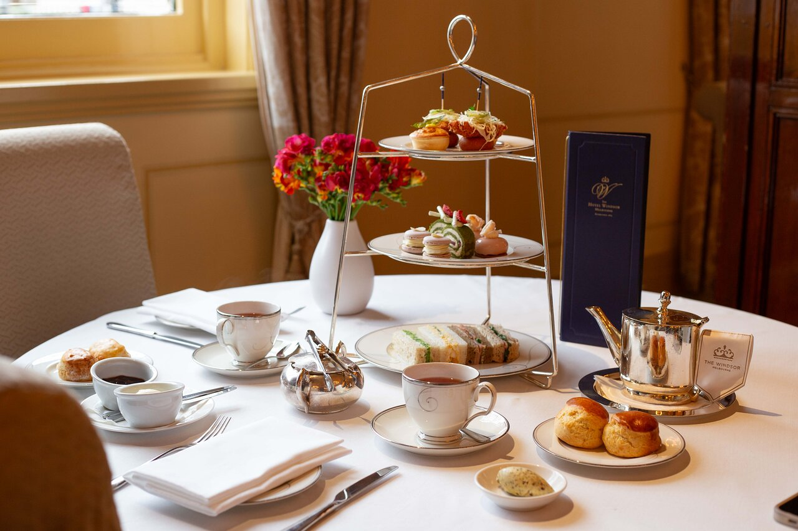

Cultura da Inglaterra: Um Mergulho Profundo no Coração Britânico
A Inglaterra é um país que transpira história, tradições e um charme inconfundível — tudo isso temperado com aquele humor britânico que sabe ser sério e brincalhão na medida certa. Sua cultura é uma mistura rica de costumes antigos, inovações artísticas, esportes apaixonantes e, claro, muita gente com um sotaque que a gente adora tentar imitar (sem sucesso, claro!).
A Hora do Chá — Muito Além do Chá das Cinco
A “afternoon tea” não é só um lanche; é quase uma cerimônia social que representa a elegância e o refinamento ingleses. Criada no século XIX para preencher o intervalo entre o almoço e o jantar, essa pausa vem acompanhada de uma seleção caprichada de chás — do clássico Earl Grey ao Darjeeling — e uma mesa repleta de delícias: scones com clotted cream e geleia, mini sanduíches de pepino, bolinhos delicados e biscoitos crocantes. E para acompanhar, muita conversa e risadas, porque um chá sem boas histórias não vale nada!
Literatura: O Orgulho que Nem o Tempo Apaga
Quando falamos de cultura inglesa, é impossível não lembrar dos gigantes da literatura. William Shakespeare não é só o “Bardo de Stratford”, mas uma figura cujas peças ainda influenciam teatro e cinema no mundo todo. Jane Austen, com seu olhar afiado sobre as nuances sociais, e Charles Dickens, que nos apresentou aos dramas e alegrias da Londres vitoriana, também são estrelas incontestáveis. E não para por aí: J.K. Rowling, com a saga de Harry Potter, trouxe a magia para um novo século, fazendo a Inglaterra brilhar nos olhos de crianças e adultos.
Música que Fez História (E Continua Fazendo)
A Inglaterra deu ao mundo algumas das maiores lendas musicais: os Beatles, Rolling Stones, Queen, David Bowie... A lista é tão grande que dá até pra formar uma banda só com nomes britânicos. De pubs acolhedores onde músicos amadores tocam de graça, até festivais gigantes como Glastonbury, a música está no DNA do povo inglês. E, claro, tem aquele famoso “British Invasion” que revolucionou o rock nos anos 60 e 70, colocando a Inglaterra no topo do mundo musical.
Tradições e Festas — Do Folclore ao Moderno
Além da famosa Guy Fawkes Night, a Inglaterra é terra de muitas outras celebrações tradicionais. O Trooping the Colour, por exemplo, é uma parada militar espetacular que comemora o aniversário oficial da Rainha — com direito a cavalos, bandinhas e muita pompa. O Natal na Inglaterra é uma verdadeira festa, com mercados de rua, luzes cintilantes e pratos típicos como o Christmas pudding (aquele bolo que parece uma poção mágica). E para quem gosta de algo mais excêntrico, há o Cheese Rolling Festival, onde pessoas literalmente correm atrás de um queijo rolando ladeira abaixo — uma prova de que tradição também pode ser divertida e um pouco maluca!

Futebol: Mais que um Esporte, uma Paixão Nacional
O futebol na Inglaterra não é só um jogo; é parte da cultura popular, da identidade local e da conversa de bar. Com os clubes mais antigos do mundo e as ligas mais disputadas, o “beautiful game” ganha estádios lotados, rivalidades acirradas e torcedores que vivem a emoção como se fosse a coisa mais importante da vida (e, para muitos, é mesmo!). Quem nunca se pegou discutindo taticamente um lance ou comemorando um gol como se fosse um herói nacional?
Gastronomia: Muito Além do Fish and Chips
Sim, o famoso fish and chips é um ícone, com seu peixe empanado crocante e batatas fritas bem douradinhas. Mas a culinária inglesa vai muito além disso. Tem o “Sunday roast” (assado de domingo), com carne, batatas, legumes e aquele molho chamado “gravy” que é praticamente uma oração à comida. O café da manhã inglês completo (full English breakfast) é uma refeição que pode sustentar até um atleta — com ovos, bacon, linguiça, feijão, cogumelos e até o “black pudding” (não se assuste, é uma espécie de embutido). Ah, e claro, não dá para esquecer das pubs, onde se pode experimentar pratos clássicos, uma cerveja artesanal e o famoso “pie and mash” (torta e purê).
Arquitetura e Patrimônio: O Passado que Enfeita o Presente
Londres e outras cidades inglesas são um verdadeiro museu a céu aberto, com castelos medievais, igrejas góticas, palácios reais e ruas que parecem ter saído de um filme histórico. O Big Ben, a Torre de Londres, o Palácio de Buckingham, e até os pubs centenários contam histórias de reis, rainhas, batalhas e mudanças sociais. Tudo isso faz da Inglaterra um lugar onde passado e presente convivem lado a lado, numa mistura que encanta moradores e turistas.
A Vida Cotidiana e o Humor Britânico
Por fim, não dá para falar de cultura inglesa sem mencionar o humor — aquele jeito único de rir das próprias dificuldades, com ironia fina e autodepreciação. Os britânicos são mestres em sarcasmo, piadinhas e em transformar o trivial em algo engraçado. Essa leveza é o que mantém o espírito do povo vivo, mesmo nos dias cinzentos (e, convenhamos, na Inglaterra chove bastante!).
Jack, o Estripador — O Mistério Sombrio que Nunca Morre
Nas vielas sombrias de Whitechapel, em 1888, uma figura aterrorizou Londres e o mundo: Jack, o Estripador. Com uma série de assassinatos brutais que desafiaram a polícia da época, Jack tornou-se um símbolo do medo e do mistério. Até hoje, sua identidade permanece um enigma, alimentando teorias, livros, filmes e até tours turísticos para os corajosos que querem sentir de perto o suspense da Londres vitoriana. Essa lenda sombria é um contraponto fascinante à imagem elegante da Inglaterra, lembrando que, por trás do chá e dos castelos, existem histórias que gelam a espinha.